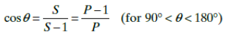

The Beer–Lambert law, also known as Beer's law, the Lambert–Beer law, or the Beer–Lambert–Bouguer law relates the attenuation of light to the properties of the material through which the light is travelling. The Beer-Lambert law states that the quantity of light absorbed by a substance dissolved in a fully transmitting solvent is directly proportional to the concentration of the substance and the path length of the light through the solution.
The biuret test is a chemical test that can be used to check for the presence of peptide bonds in a given sample. Therefore, the biuret test can also be used to gauge the amount of protein present in the sample. In this test, the presence of peptides results in the formation of pale purple(or mauve) coloured coordination compounds of the copper(II)ion. (when the solution is sufficiently alkaline).
Biuret Reagent: The biuret reagent is made up of hydrated copper sulfate, sodium hydroxide, and Rochelle salt (sodium-potassium tartrate). Here, the Rochelle salt acts as a chelating agent and stabilizes the copper(II) ions. The biuret reaction can be used to assess the concentration of proteins because peptide bonds occur with the same frequency per amino acid in the peptide. The intensity of the color, and hence the absorption at 540 nm, is directly proportional to the protein concentration, according to the Beer–Lambert law.Reaction: Cu2+ + 2(R-CO-NH-) +2OH- → [Cu(RCONH)2]2+ +2H2O +2e-
Drago suggested an empirical rule which is compatible with the energetics of hybridization. It states that if the central atom is in the third row or below in the periodic table, the lone pair will occupy a stereochemically inactive s orbital, and the bonding will be through p orbitals, and bond angles will be nearly 90° if the electronegativity of the surrounding atom is ≤2.5. The above rule is based upon the relation between hybridization and bond angle for two or more equivalent s–p hybrid orbitals, where the fraction of s character (S) or fraction of p character (P) is given by the relationship  For example, for AsH3, 𝐻𝐴𝑠𝐻̂ angle is 91.8°, and from calculation it can be shown that each As–H bond consists of almost 97% p character and 3% s character. Hence, it can be concluded that there is no hybridization or the extent of hybridization is very less for PH3, AsH3, SbH3, H2S, H2Se and H2Te molecules.
In a molecule, a central atom bonded to multiple groups will hybridise so that orbitals with more s character are directed towards electropositive groups or lone pair(s), while orbitals with more p character will be directed towards groups that are more electronegative. This is why in PCl5 molecule, lone pairs occupy equitorial positions and Cl atoms occupy axial positions.